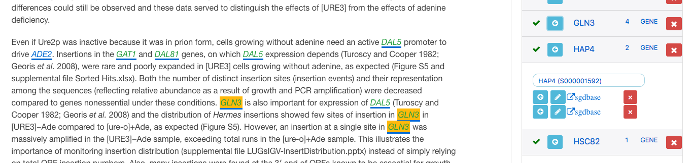
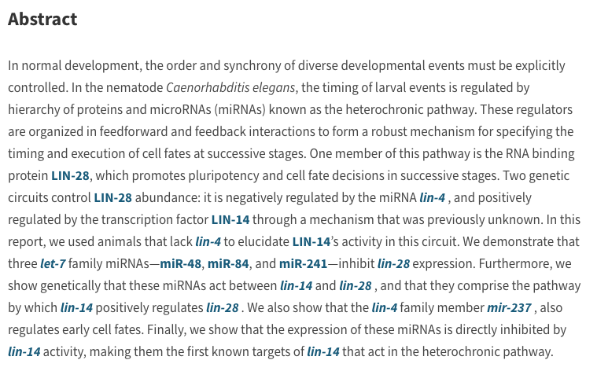

BioEntity.Link
Bioentity.Link embeds hyperlinks from biological terms in science articles to authoritative community-focused curated databases.
History
This project started in 2009 as a collaboration with the Genetics Society of America (GSA), embedding hyperlinks for bioentities reported in Genetics, and then G3 articles, to the Model Organism Databases: WormBase, Flybase, and the Saccharomyces Genome Database. Bioentity.Link is a new and improved linking pipeline. We are expanding to link more bioentities in a single paper and to collaborate with more curated databases and more journals.
Why
Unlike many linking efforts, Bioentity.Link URIs are embedded as the article is being processed for publication, so newly reported bioentities discovered during linking may receive a link to a database page that does not exist at the time of linking but will in future database releases. In addition, all Bioentity.Link hyperlinks go through a quality check by a curator at each partnering database. This QC step basically serves as a biological copy-editing service since it is performed by domain experts who ensure that the entity is reported correctly by the author, adhering to community nomenclature standards and that the correct link is applied.
The Linker
Unlike many linking efforts, Bioentity.Link URIs are embedded as the article is being processed for publication, so newly reported bioentities discovered during linking may receive a link to a database page that does not exist at the time of linking but will in future database releases. In addition, all Bioentity.Link hyperlinks go through a quality check by a curator at each partnering database. This QC step basically serves as a biological copy-editing service since it is performed by domain experts who ensure that the entity is reported correctly by the author thus adhering to community nomenclature standards and ensuring that the correct link is applied.
Our new and improved link editor and behind the scenes communication portal is built on the open source Texture framework, an authoring and manuscript processing application developed by Michael Aufreiter and Olivier Spéciel as an eLife-supported effort. Development of Texture continues as part of the Substance.io Consortium.

Current collaborators
Visit hyperlinked papers in Genetics Society of America journals GENETICS and G3: Genes | Genomes | Genetics to see what the initial project has been doing. We hope to have our new and improved pipeline in production by the end of the year.

Quick links: Tsialikas et al., 2017: doi.org/10.1534/genetics.116.195040 Yang and Rosenwald, 2017: doi.org/10.1534/g3.116.035998 Christesen et al., 2017: doi.org/10.1534/g3.116.037333